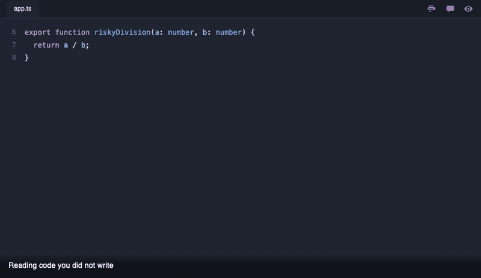

Why
We read more than we write
VS Code stopped being only a code editor long ago. People draft documents in it, read specifications in it, and work through unfamiliar repositories in it.
AI generated code tipped the balance
Code now arrives written, with its comments already attached. The typing is increasingly done for us, so what is left is reading it and deciding whether it is right.
Code comments are not notes
They document what the code does, which is a different job entirely. Nothing in them records what you noticed while reading, what looked wrong, or what you wanted a colleague to confirm.
Keep them in a layer of their own
Plenty of what you want to write down is not meant to ship. A doubt about a function, a reminder to check something later, a question for a colleague tomorrow. Put that in the source and it becomes part of the product and part of everyone's diff, and someone has to remember to take it out again.
CodeLight keeps those notes beside the code rather than inside it. Commit the CodeLight file in .vscode, either codelight.json or codelight.json.gz, and the whole team reads the layer. Add it to your .gitignore before you ever commit it and it stays on your machine, so you can be as blunt as you like while reading. A file git already tracks stays tracked until you run git rm --cached on it.
What it does

- Highlights any selection in a colour you choose, from a palette you can redefine.
- Turns on a marker so each selection gets highlighted until you turn it off, and an exact reselection of one of your own uncommented highlights changes its colour instead.
- Hides every highlight and comment with one button, and brings them back with the same one.
- Attaches comments and replies, labelled with your GitHub account when you are signed in and with the name git knows you by when you are not.
- Shows the thread when you hover the highlight, and the latest note inline at the end of the line.
- Lists every annotation in the project in a panel, grouped by file, filtered by colour, click to jump.
- Moves highlights with your edits, finds the text again when it moves away, and follows a file renamed inside VS Code.
- Keeps the notes of each folder in one file under
.vscode, so they travel through git exactly like code. - Adds that file to
.gitignore, or takes it back out, from one command. - Puts both sides back together when a merge leaves a conflict in the annotation file.
- Gives every folder of a multi root workspace its own annotation file.
Using it
| Action | macOS | Windows and Linux |
|---|---|---|
| Highlight the selection | cmd alt K | ctrl K then ctrl Y |
| Comment on the selection | cmd alt M | ctrl K then ctrl G |
Everything else is in the command palette under CodeLight, in the editor right click menu, and in the panel behind the CodeLight icon in the activity bar.
Settings
| Setting | Default | Meaning |
|---|---|---|
codelight.palette | built in | Colours offered in the picker |
codelight.highlightOpacity | 0.3 | Strength of the highlight background |
codelight.inlineComments | preview | Latest comment, a count, or nothing |
codelight.commentGutter | always | Where the comment button appears in the gutter |
codelight.gutterMarks | true | Coloured mark in the gutter beside every highlight |
codelight.storage | json | Format used when the annotation file is first created, plain or gzipped |
If you commit the gzipped store, add *.json.gz binary to your .gitattributes first. A repository that forces * text rewrites line endings on checkout, which corrupts the gzip stream and leaves the store unreadable.
Install
Search for CodeLight in the Extensions view, or install it from a terminal.
code --install-extension souhailaserbout.codelightTo build it from source instead, package the repository and install the result.
git clone https://github.com/souhailaS/CodeLight.git
cd CodeLight
npm install
npx @vscode/vsce package
code --install-extension codelight-0.7.0.vsix